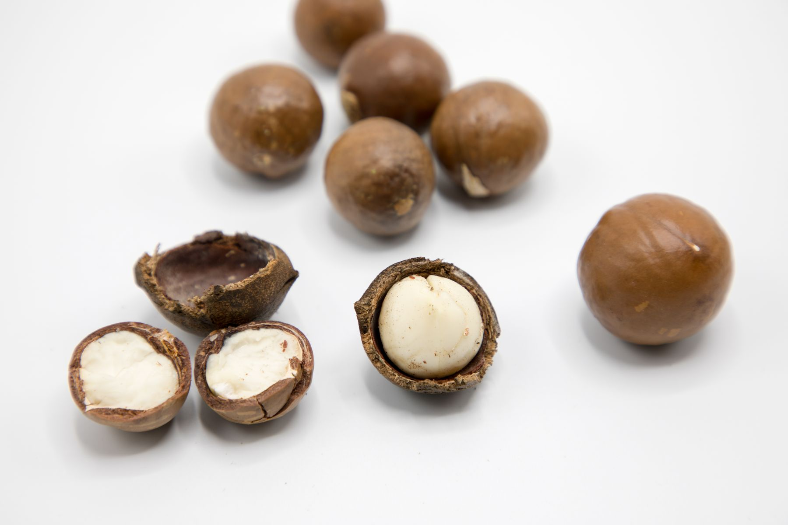
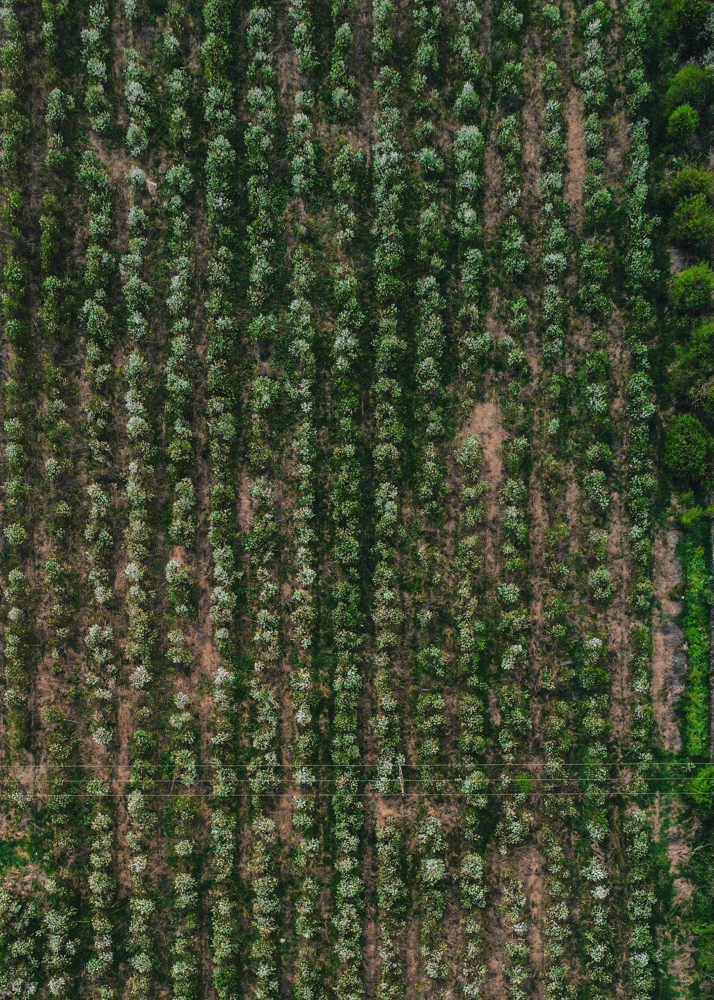
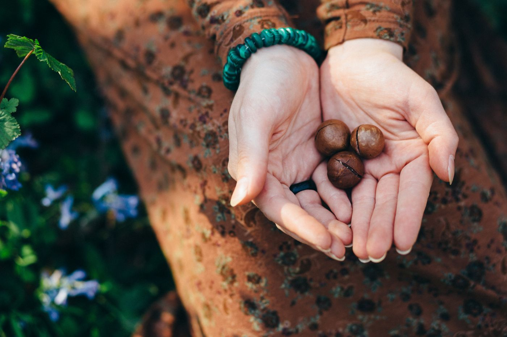

01Naturally distinctive
↗Macadamias
Macadamia products processed in South Africa for your food, ingredient and retail requirements.

Macadamias and cashews. Carefully processed in South Africa, prepared for the possibilities of a global market.
Explore our products ↗↓The distance between an African nut and a global market is measured in more than miles.
It takes thoughtful processing, clear quality expectations and a partner who understands your business. From our base in Mbombela, Nuts Paradise brings those things together for professional buyers.
For importers, manufacturers, distributors and retail buyers. Your requirements shape the conversation.

THE ORIGIN STORY · STOCK PHOTOGRAPHYOur Riverside Park operation connects product preparation, quality management and export readiness.
Product, volume, destination and timing.
Preparation shaped by agreed buyer requirements.
Quality oversight and coordinated export preparation.
Certified processing for both macadamias and cashews. Quality management that belongs at the heart of your supply chain.
Discuss your quality requirements ↗